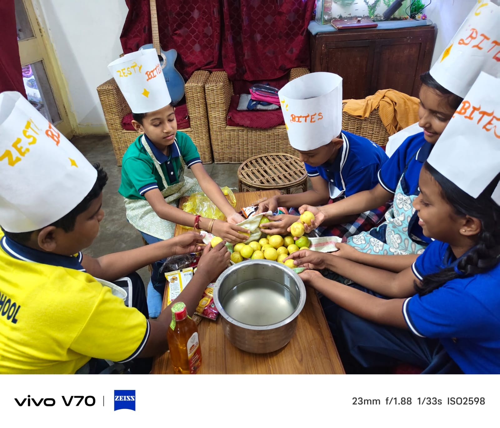

Pickle Gallery 📸
A colourful collection of traditional pickles.


Discover the traditional art of pickle making, from fresh ingredients to delicious homemade goodness. Explore our ingredients, preparation steps, benefits and colourful pickle collection.

Fresh ingredients and aromatic spices bring the pickle to life.
Fresh raw mangoes provide the delicious sour and fruity base.
Adds colour, flavour and the perfect level of spice.
Helps develop the traditional taste of the pickle.
Traditional spices and oil give the pickle its rich flavour.
From fresh ingredients to a tasty traditional pickle.
Wash and clean the fresh ingredients thoroughly.
Cut the ingredients into suitable pieces.
Combine salt, spices and other ingredients carefully.
Store the pickle properly and allow the flavours to develop.
Some traditional qualities of homemade pickles.
Homemade preparation allows careful selection of ingredients.
Traditional spices create a unique combination of taste and aroma.
Traditional recipes can bring a familiar homemade taste to meals.
A colourful collection of traditional pickles.
Welcome to Britannica Zesty Bites! Our project explores the traditional preparation of Indian pickles, the ingredients used, the preparation process and the flavours that make pickles a special part of Indian food culture.
A tangy and spicy pickle inspired by traditional homemade recipes. Explore the ingredients and preparation process to learn how this delicious pickle is made.